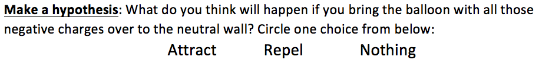
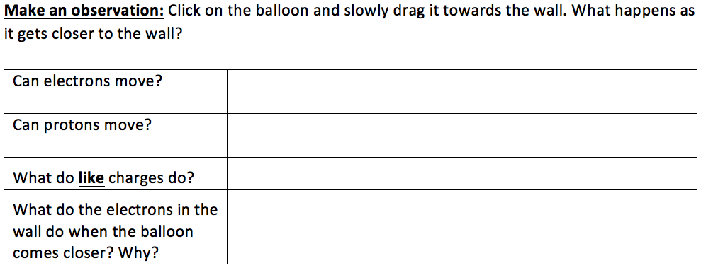
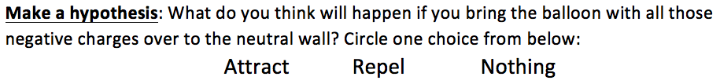
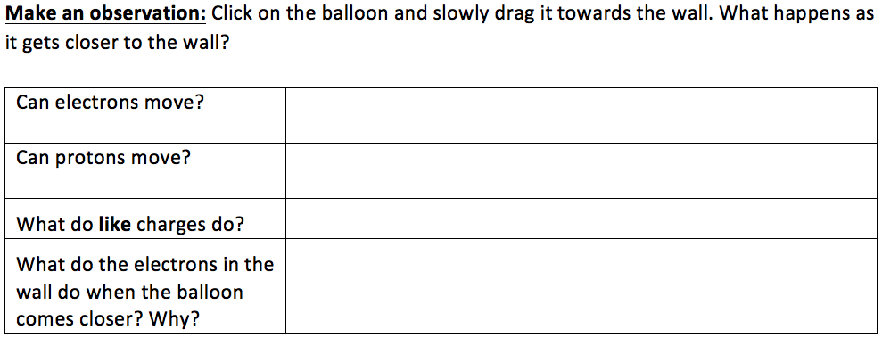

Accessible interactive simulations
for
physics education
Taliesin L. Smith & Emily B. Moore
AERBVI, Reno, Nevado, July 27, 2018
Overview
- What is a PhET Sim, & how are they used by teachers?
- What inclusive design research we are doing for accessibility?
- What accessibility features are availble, & in what sims?
- Where can I find teaching resources & more sims?
- What's coming for accessibility?
- Questions & discussion (really interested in your feedback)

Learning Objectives!
- Describe 3 ways interactive science simulations are used in traditional classrooms.
- Describe 2 of the accessibility features the PhET project has incorporated into our accessible sims, &
- how these may be beneficial to students with visual impairments.
- Find, access, & explore an accessible PhET simulation.
Engaging with Science
Labs & demonstrations are ideal for exploring & experiementing science

- Not accessible all the time
- Pose a range of access issues for students with disabilities

Courtesy of Allison Shelley/The Verbatim Agency for American Education: Images of Teachers and Students in Action. For more information about acceptable uses and licensing terms visit https://creativecommons.org/licenses/by-nc/4.0/.
Interactive Science Simulations
Of which there are many types, can also engage students in scientific inquiry.


- Are more readily available
- Help students learn & think about science
- Do not require special equipment
- Create a safe lab-like exploratory experience
- Allow students to experiment & discover science like a scientist
PhET Interactive Simulations

- Started in 2002
- 170 science & math simulations
- Over 50 in HTML5
- Run 100 Million+ times/year
- 92 languages
- Flexible, exploratory learning tools
- Used with a diverse age range
- Free of cost & openly licensed
Balloons & Static Electricity
Design sims to
- Be engaging
- Be Dynamic
- Be Intuitive
- Link represenations
- Connect to the real world
- Be fun & game-like

Teachers Exploit Design Flexibility
Use sims in diverse ways
- During lectures (predict & demo)
- Clicker questions (poll, engage, evaluate)
- Introductory exploration
- Guided exploration - make students drive
- Use worksheets & tables to scaffold activities


Example Worksheets
 



Accessibility Research & Inclusive Design

For A11y: Interview diverse users
- Students & adults with vision impairments using screen reader software
- Consultants with vision impairments & science expertise
Accessible design goals
- As simple & flexibile (true PhET fashion)
- Minimize long-term maintenance costs & overall complexity
Accessible design features
- Aleternative input
- Description
- Sonification
PhET's Challenge for Alternative Input
Wide range of interactive sim objects

Simple: Maps directly to HTML elements.

Moderately Complex: Maps to HTML enhanced with ARIA.

Complex: Custom approach required.
/